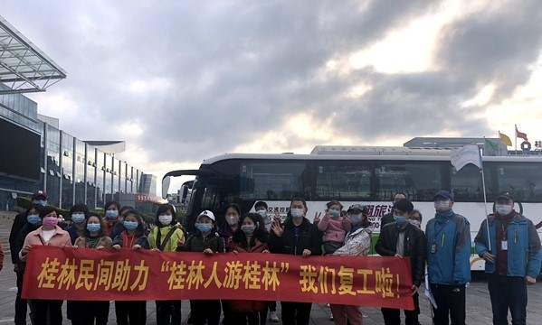

Добро пожаловать в туристическую сеть Гуйлиня~
Добро пожаловать в туристическую сеть Гуйлиня~
издатель:桂林生活网время:2020-03-28
28 марта в 8:30 утра на площади Цзятянься в городе Гуйлинь 12 туристических автобусов, в которых находилось более 360 туристов, отправились по семи классическим туристическим маршрутам нашего города. Это также положило начало акции «Люди Гуйлиня, путешествующие по Гуйлиню», что ознаменовало официальное возобновление туристической индустрии Гуйлиня.
Понятно, что с момента вспышки новой эпидемии коронной пневмонии индустрия туризма Гуйлиня понесла серьезные потери. В целях содействия всестороннему восстановлению индустрии культуры и туризма города и стимулирования экономики индустрии культурного туризма Гуйлиня Муниципальное бюро культуры, радио, кино и туризма активно приняло меры в соответствии с требованиями «Гуансиская культура и туризм». Промышленность для ускорения комплексного возобновления работы и производства», и запустила деятельность «Индустрия культуры и туризма Гуйлиня». Люди путешествуют по Гуйлиню». Мероприятие было организовано платформой Tencent «i Tour Guilin». Восемь туристических агентств, включая Guilin International Travel и Huaxia International Travel, запустили 7 классических туристических маршрутов по городу Гуйлинь со скидкой для жителей Гуйлиня.
«В рамках этого тура для жителей Гуйлиня мы запустили два однодневных тура: культурный тур Гунчэн Яоюнь и красная память Гуаньян. Цены очень доступные, и мы получили сильную поддержку со стороны жителей. Мы свяжемся друг с другом в будущем. . Что касается живописных мест, мы будем напрямую продвигать льготные цены, которые они дают нам для каждого туриста». Ли Сяохуэй, генеральный менеджер Guilin Huaxia International Travel Service, сказал: работа в сфере туристических услуг во время проведения мероприятий. Целесообразно использовать дезинфекцию автомобилей, измерение температуры и другие противоэпидемические работы, чтобы обеспечить планомерное развитие деятельности и укрепить уверенность туристов в безопасном путешествии».
«После того, как мы объявили о проведении «Гуйлиньского тура по Гуйлиню», мы всего за два дня получили ответы от восьми туристических агентств, запустив 7 маршрутов и запустив 12 автобусов. туризма в нашем городе, он последовательно запустил более 20 маршрутов и даже сотни продуктов». в ответ на акцию «Люди Гуанси, путешествующие в Гуанси», которая будет запущена в апреле: «Это мероприятие является движущей силой, и оно привлечет жителей из разных городов Гуанси в Гуйлинь, чтобы способствовать восстановлению туристической индустрии Гуйлиня.
На площади Цзятянься в городе Гуйлинь 12 туристических автобусов с более чем 360 туристами отправились по семи классическим туристическим маршрутам нашего города. Это также положило начало акции «Люди Гуйлиня, путешествующие по Гуйлиню», что ознаменовало официальное возобновление туристической индустрии Гуйлиня.